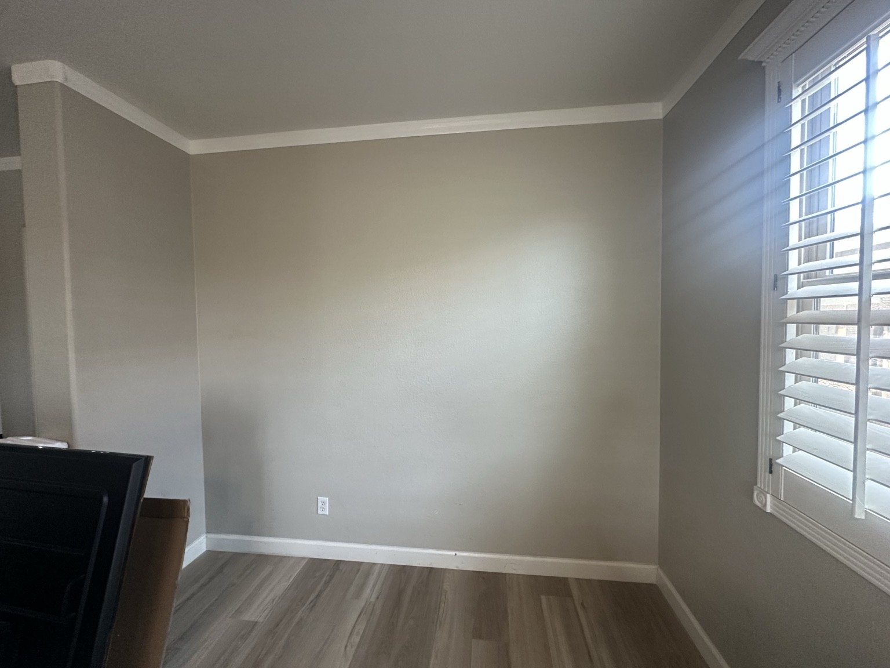
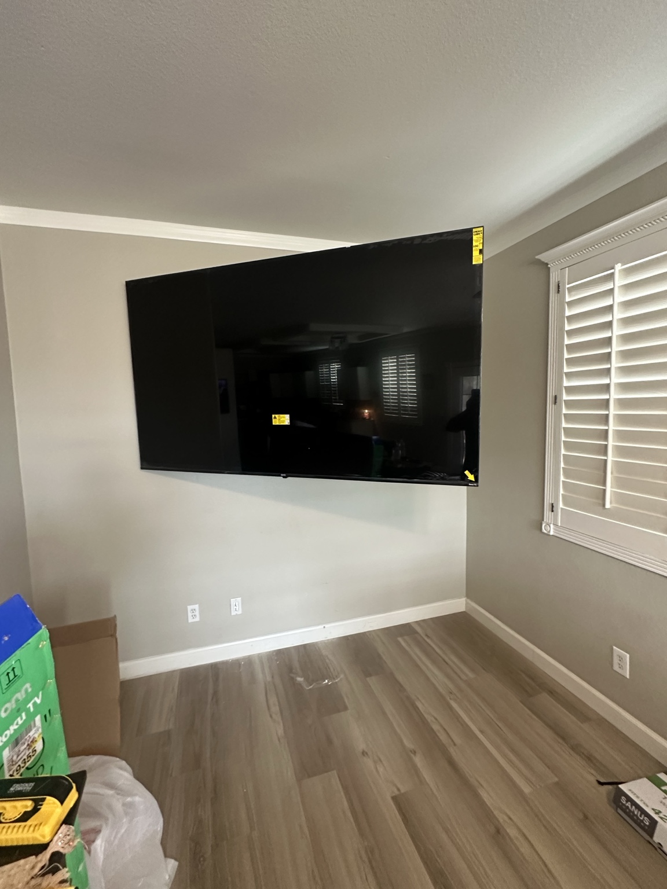

COLLECTION 001 / LESSON 07
From first inquiry to first paid customer.
AZHomeInstalls' first paid project is documented here without invented conversion statistics, outreach scripts, or undocumented steps. Distinguish what actually happened from the practices you can apply to your own business.
Step 1 — What we can verify
- October 13, 2026: first paid AZHomeInstalls job.
- Lead source: Facebook Marketplace.
- Payment: $200 cash, received in full.
- Installation: mounted an 85-inch television using the customer-provided bracket.
- Additional work: removed 15 small pictures, left their wall hooks in place at the customer's request, boxed the pictures, and hung one portrait centered between living-room windows.
- Finishing visit: a no-charge 11 a.m. return for touch-ups was planned for the next day; the record does not independently verify completion.
- Invoice: an invoice email was planned after completing the work; it is not verified as sent.
Step 2 — Look at the actual result
These are the authentic before-and-after project images already archived in the collection. They demonstrate completed physical work, not ad attribution, return on investment, or profit.


Step 3 — Prepare the first-sale CRM record
The actual instruction was to enter the first paid job into the existing AHI lead management system. Use your chosen LLM to prepare a factual CRM update for a system you own and have authorized access to. The prompt must not invent customer data, record IDs, completed follow-ups, or invoice delivery.
These fields stay in this browser session.
Step 4 — Review the CRM update prompt
Step 5 — Confirm the CRM record accurately reflects the sale
The owner instructed the assistant to update the existing AHI lead management system with the completed first job and prepare an invoice for later review. This lesson demonstrates that specific documentation request, not a generalized closing strategy. Check the record in your own CRM for the source, work scope, payment method and paid-in-full status. A conversation instruction alone does not verify that a database write succeeded. Likewise, one $200 transaction does not establish profitability or repeatable acquisition economics.
Finish the lesson
The B.O.B. test: describe the confirmed events accurately, identify what remains unknown, prepare an accurate CRM update, verify whether it was actually saved, and protect customer data. The exercise does not require a subscription or access to AHI systems.